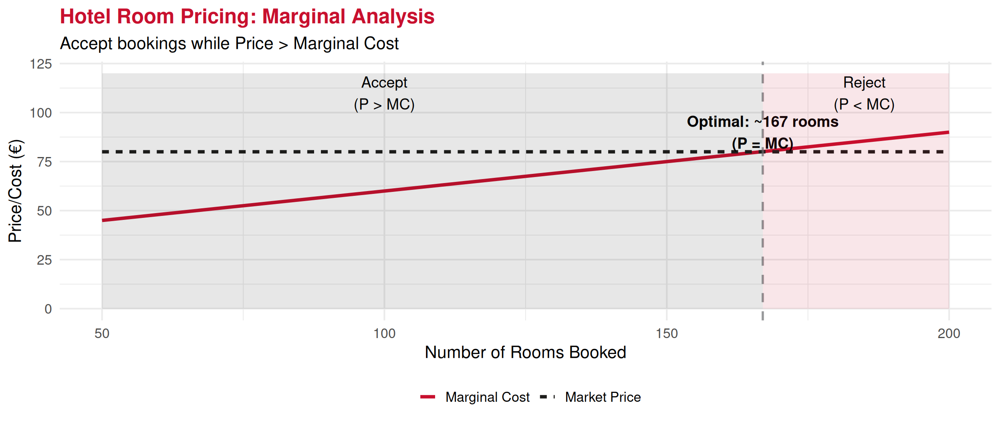
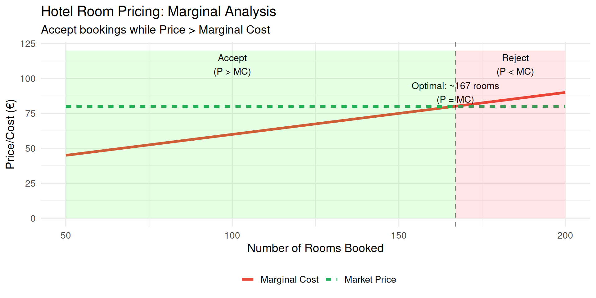
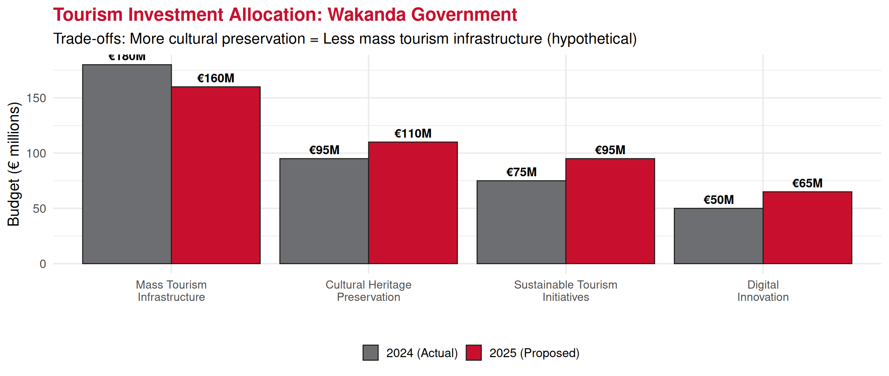
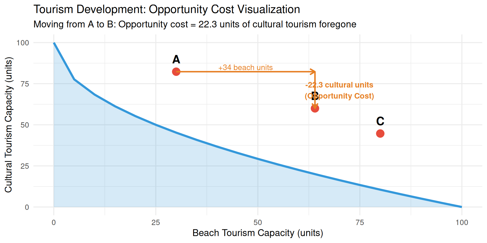
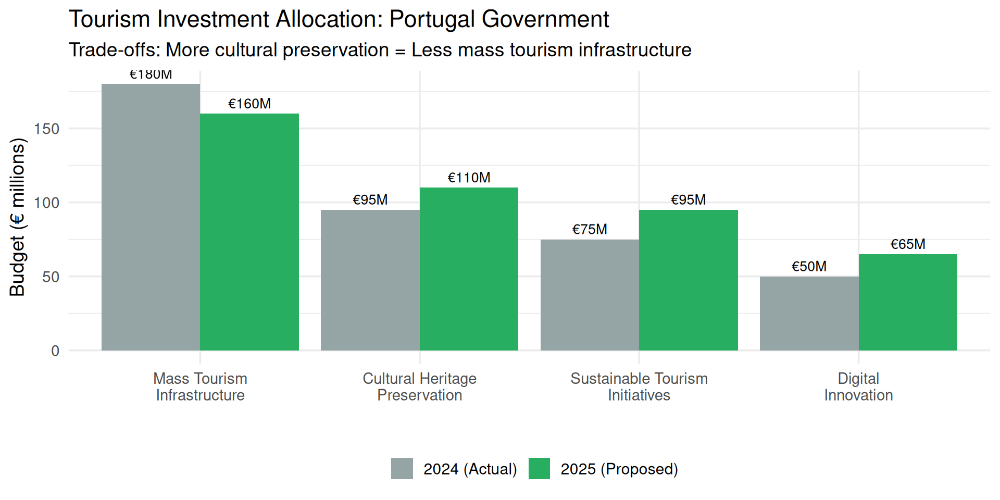
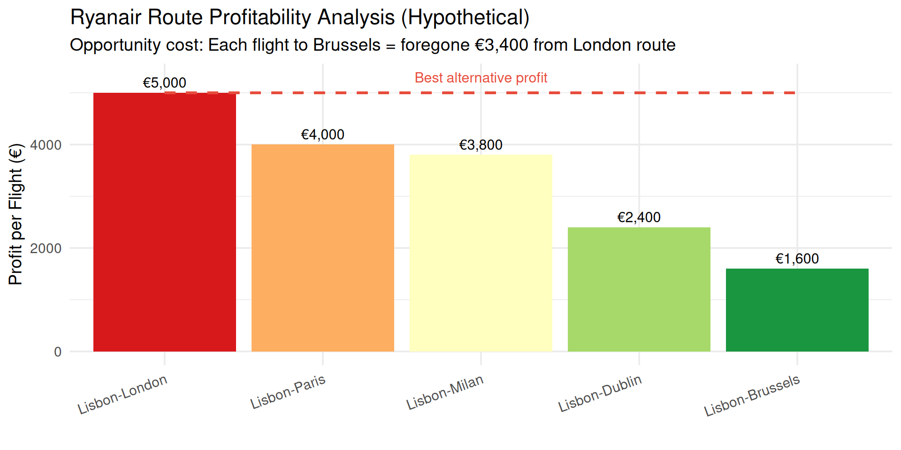

Economics Fundamentals
Lecture 3: Rationality, Choices and Opportunity Cost
Paulo Fagandini
2026
Recap: Previous Lectures
Lecture 1: Economics, Scarcity, Efficiency, Macro vs. Micro
Lecture 2: Three economic problems (WHAT, HOW, FOR WHOM) and economic systems (Market, Planned, Mixed)
Today’s Focus:
- How do people make economic decisions?
- What is rationality?
- Opportunity cost – one of economics’ most powerful concepts!
Economic Rationality
Assumption: People are rational decision-makers
What does “rational” mean in economics?
- People have clear preferences
- They seek to maximize their well-being (utility)
- They respond predictably to incentives
- They use cost-benefit analysis
Important: Rational ≠ Perfect or emotionless!
People can be rational within their information and cognitive limits (bounded rationality)
Cost-Benefit Principle
The Foundation of Rational Choice:
An action should be undertaken if and only if the benefits exceed the costs.
\[\text{Decision Rule: } \begin{cases} \text{Do it} & \text{if } Benefits \geq Costs \\ \text{Don't do it} & \text{if } Benefits < Costs \end{cases}\]
In practice:
- Benefits = What you gain
- Costs = What you give up
- Compare net benefit of alternatives
Tourism Example: Cost-Benefit
Should a tourist visit the Belém Tower in Lisbon?
Benefits
- Historical experience
- Photos/memories
- Educational value
- Satisfaction
Estimated value: €20
Costs
- Entry ticket: €6
- Travel time: 30 min
- Waiting time: 20 min
- Value of time: €15/hr
Total time cost: €12.50 Total cost: €18.50
Decision: Benefits (€20) > Costs (€18.50) → Visit!
But if waiting time increases to 60 min, costs rise to €28.50 → Don’t visit!
Marginal Analysis
Key Concept: Decisions are made at the margin
Marginal = Additional/incremental change from one more unit
- Marginal Benefit (MB): Benefit from one additional unit
- Marginal Cost (MC): Cost of one additional unit
Optimal Decision Rule:
\[\text{Continue activity while } MB \geq MC\]
Stop when \(MB < MC\)
Marginal Analysis: Hotel Rooms
Should a hotel accept one more booking?
Opportunity Cost: Definition
The Most Important Concept in Economics!
Opportunity Cost = The value of the best alternative foregone when making a choice
Key Points:
- It’s what you give up, not what you pay
- It’s the next-best alternative (not all alternatives)
- It includes both explicit (money) and implicit costs (time, foregone opportunities)
Opportunity Cost: Definition
When deciding: You should choose option A over B if:
\[\overbrace{B_A}^{\text{Gross Benefit of}\ A} \geq \underbrace{\overbrace{C_A}^{\text{Monetary Cost}} + \underbrace{(B_B-C_b)}_{\text{Surplus of best alternative}}}_{\text{Opportunity Cost of}\ A}\]
Opportunity Cost Examples
Simple Example: You have €100 and 4 hours free on Saturday afternoon.
Options:
A. Visit museum (€10 entry, 3 hours)
B. Beach trip (€0 entry, 4 hours)
C. Movie (€12 ticket, 2 hours)
D. Stay home and study (€0, 4 hours)
If you choose A (museum):
- Explicit cost: €10
- Opportunity cost: Value of best alternative foregone
- Can’t go to beach (assume you value it at €20)
- Total opportunity cost: €10 paid + €20 value foregone = €30
Opportunity Cost in Tourism Decisions
Example: Hotel Investment
If you build hotel in Lisbon: Opportunity cost = foregone €520k from Algarve (best alternative) (We are assuming the same investment in both places)
Sunk Costs vs. Opportunity Costs
Sunk Cost: Cost already incurred that cannot be recovered
Critical Rule: Ignore sunk costs in decisions!
They’re already spent – only future costs and benefits matter.
Tourism Example:
You bought a non-refundable €100 train ticket to Porto. On the travel day, you feel sick.
Sunk cost: €100 (already spent, can’t get back)
Decision: Should you go?
- ❌ Wrong thinking: “I paid €100, so I must go”
- ✅ Right thinking: “€100 is gone. Will I enjoy the trip enough given how I feel?”
The €100 is irrelevant to the decision!
Real Example: Sunk Costs in Airlines
Case: TAP Air Portugal orders new aircraft

Correct Decision Process: Compare future benefits (passenger revenue, efficiency) vs. future costs (€1,350M), ignoring the sunk €150M.
Opportunity Cost in Time Allocation
Very Important: Your time has opportunity cost!
Example: Restaurant owner deciding whether to hire manager or self-manage

Analysis: Hiring manager is better (€130k > €120k) because owner’s time has opportunity cost!
Production Possibilities Frontier (Preview)
Visual representation of opportunity cost at societal level

Next lecture: We’ll explore PPF in detail!
Trade-offs in Tourism: Real Data
Wakanda 2024: Investment Trade-offs

Opportunity cost of increasing cultural preservation by €15M = €20M less for mass tourism infrastructure
Making Better Decisions
Checklist for Rational Economic Decisions:
- ✓ Identify all alternatives
- ✓ Estimate benefits of each alternative
- ✓ Estimate costs (including opportunity costs!)
- ✓ Ignore sunk costs (they’re irrelevant)
- ✓ Consider marginal changes (not just totals)
- ✓ Choose alternative with highest net benefit
Remember: Good decisions maximize net benefit (Benefits - Opportunity Costs)
Common Decision Mistakes
Mistake 1: Ignoring opportunity costs
- Thinking only about money paid, not value of alternatives foregone
Mistake 2: Counting sunk costs
- “I’ve already invested so much, I must continue”
Mistake 3: Ignoring marginal analysis
- Looking at totals instead of additional benefits/costs
Mistake 4: Not comparing net benefits
- Choosing option with highest benefit (but also highest cost)
Real Business Case: Ryanair Strategy
Ryanair’s Opportunity Cost Thinking (2024)
Decision: Cancel Brussels route, add London frequency → Better use of aircraft (opportunity cost logic)
Summary: Key Concepts
- Rationality: People seek to maximize well-being through cost-benefit analysis
- Cost-Benefit Principle: Do it if benefits ≥ costs
- Marginal Analysis: Decisions at the margin (additional units)
- Opportunity Cost: Value of best alternative foregone
- Sunk Costs: Ignore them! (already spent, irrelevant)
- Trade-offs: Choosing one thing means giving up another
- Good Decisions: Maximize net benefit considering opportunity costs
Exercises
Practice Time!
Real-world applications of opportunity cost.
Exercise 1: Multiple Choice
Question: A hotel owner can use her restaurant space for:
- Option A: Fine dining (€80k annual profit)
- Option B: Buffet restaurant (€60k annual profit)
- Option C: Rent to external operator (€50k annual rent)
She chooses Option A. What is the opportunity cost of this decision?
A. €80,000
B. €60,000
C. €50,000
D. €110,000
Answer: B (€60,000)
Explanation: Opportunity cost = value of best alternative foregone. The next-best alternative to fine dining (€80k) is buffet (€60k), NOT the sum of all alternatives.
Exercise 2: Multiple Choice
Question: You bought a non-refundable €200 ticket to a concert. On the day of the concert, you feel ill. A friend offers you €50 for the ticket (transferable). What is the opportunity cost of attending the concert?
A. €200
B. €150
C. €50 + discomfort from illness
D. €250
Answer: C (€50 + discomfort)
Explanation:
- €200 is SUNK (can’t recover even if you don’t go)
- If you attend: you give up €50 (could sell) + endure discomfort
- Opportunity cost = what you give up by attending
Exercise 3: Open Question
Scenario: A tour operator in Porto must decide between two summer season strategies:
Strategy A: Focus on luxury tours
- Expected revenue: €500,000
- Variable costs: €280,000
- Fixed costs already committed: €80,000
Strategy B: Focus on budget tours
- Expected revenue: €420,000
- Variable costs: €200,000
- Same fixed costs: €80,000
Questions:
- Calculate profit for each strategy
- What is the opportunity cost of choosing Strategy A?
- Which strategy should be chosen and why?
- Are fixed costs relevant to the decision? Explain.
Exercise 3: Solution
a) Profit calculation:
Strategy A (Luxury): \[\text{Profit}_A = €500,000 - €280,000 - €80,000 = €140,000\]
Strategy B (Budget): \[\text{Profit}_B = €420,000 - €200,000 - €80,000 = €140,000\]
Both strategies have equal profit!
b) Opportunity cost of Strategy A:
Opportunity cost = Profit from best alternative foregone = €140,000 (Strategy B profit)
Exercise 3: Solution (continued)
c) Which strategy to choose?
From pure profit perspective: Indifferent (both €140,000)
But consider other factors:
- Risk: Luxury tours may have more variable demand
- Reputation: Does company have luxury experience?
- Market trends: Which segment is growing?
- Resource requirements: Which uses existing capabilities better?
Recommendation: Choose Strategy B (budget) because:
- Lower variable costs (€200k vs €280k) = less risk
- Higher revenue-to-variable-cost ratio: 2.1 vs. 1.79
- More resilient to demand fluctuations
d) Are fixed costs relevant?
NO! Fixed costs (€80,000) are SUNK – already committed regardless of strategy choice.
Only variable costs matter for this decision (they differ between strategies).
This is key example of ignoring sunk costs in decision-making!
Next Lecture
Lecture 4 (February 13, 2026):
- Production Factors (detailed)
- Production Possibilities Frontier (PPF)
- Efficiency, Trade-offs, and Economic Growth
Preparation: Review today’s opportunity cost concept – it’s the foundation for understanding PPF!
Thank You!
Questions?
Contact: paulo.fagandini@ext.universidadeeuropeia.pt
Next class: Thursday, February 13, 2026

Economics of Tourism | Lecture 3